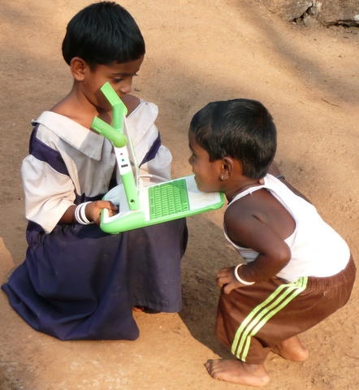

Rescatando al OLPC
Richard Stallman ha decidido adoptar un laptop XO y migrar a este equipo como su plataforma de trabajo permanente, porque al parecer el XO es el único laptop que corre una BIOS basada en software ibre.
Pero Stallman escribe sobre las controversias que se ha dado dentro de la OLPC, luego que Negroponte dijera que OLPCha fracasado por usar software opensource, es más, ha criticado una supuesta posición fundamentalista de los promotores del opensource dentro del OLPC.

Esta actitud de Negroponte provocó fisuras y grandes pérdidas para el OLPC. Las críticas de Negroponte no sólo apuntan a este supuesto fundamentalismo, sino que a la falta de un arquitecto que guiara el desarrollo de la interfaz Sugar en forma más orgánica.
Finalmente, Negroponte ha tratado de imponer el soporte para windows XP dentro de los laptops de la OLPC.
Cosas que recordar cuando lean noticias sobre el OLPC
La gente que se ha ido ha reaccionado a las críticas de Negroponte, y con respecto a esta falta de un arquitecto Ivan Krstic le responde en un interesante post titulado, Esto también pasará, cosas que recordar cuando lean noticias sobre elOLPC.
Krstic nos informa/recuerda que:
La tarjeta SD no fue instalada para dar soporte a Windows, sino como un efecto lateral del trabajo de Mark Foster, arquitecto de hardware, quien al crear un nuevo chip permitió incorporar la cámara y un slot SD:
“The SD card slot didn’t get added to the XO for Microsoft, as he is fond of saying, but because we were getting terrible read/write performance with our solid-state storage. Hardware architect Mark Foster designed a dedicated chip to speed things up; that chip, as an unanticipated bonus, made it easy to attach a camera and an SD slot.
e. Hardware architect Mark Foster designed a dedicated chip to speed things up; that chip, as an unanticipated bonus, made it easy to attach a camera and an SD slot.”
Negroponte dice que Sugar se ha desarollado en forma amorfa por falta de un arquitecto, Krstic nos cuenta que la OLPCle hizo una oferta escrita para que él se hiciera cargo de la labor de arquitecto jefe de software, pero Negroponte rescindió la oferta unilateralmente, sin dar razones. Así que si no hay arquitecto también es culpa del presidente de laOLPC.
“Nicholas’ recent claim of Sugar growing amorphously because it “didn’t have a software architect who did it in a crisp way” is similarly muddy: convincing him of the need for an architect is a battle Walter and I fought for months without success. The organization decided to move anyway, and extended me a written offer to take over as Chief Software Architect. Nicholas rescinded the offer unilaterally several weeks later, for reasons he refused to explain to anyone. So yes, there was no architect, but that’s because Nicholas didn’t want one. If he believes that’s the cause of Sugar’s problems, he has no one but himself to blame.”
Es un proyecto educativo
Stallman ha expresado muy bien el hecho de que el OLPC corre el riesgo de volverse irrelevante:
[OLPC] It is also superfluous. The OLPC has already inspired other cheap computers; if the goal is only to make cheap computers available, the OLPC project has succeeded whether or not more XOs are built. So why build more XOs? Delivering freedom would be a good reason.
Eso preocupa a Negroponte, y piensa, equivocadamente, que se trata de colocar laptops en la mayor cantidad de niños, cumpliendo eso, la meta del OLPC se cumple.
Esa también es la misión del proyecto chileno, UCPN, que los niños tengan acceso a un computador personal.
Yo no creo que esa sea la idea, ya hay computadores baratos que permitirían lograr esta meta, y al estado chileno no le costaría tanto en estos tiempos.
Creo que el mayor valor está, como siempre, en el software.
Walter Bender y muchos que lo apoyan piensan lo mismo, y por eso que ha establecido una lista de discusión para definir el futuro de Sugar, dado que al estar disponible bajo licencia libre (GPL), tiene sentido construir una comunidad enfocada en el desarrollo de Sugar como plataforma de softwaer educativo.
Its an eductation project, es el nombre de la lista creada por Bender, y recientemente ha publicado los objetivos de este grupo de trabajo:
- La teoría y practica del aprendizaje necesita evolucionar en la medida que evoluciona la tecnología.
- Hay la necesidad de tender un puente entre la comunidad de desarrolladores y la comunidad de educadores.
- El desarrollo del software Sugar puede servir como un sustento estructural tangible.
- Entender la importancia educacional de Sugar es el foco actual de la lista de discusión.
Como siempre me ha interesado más el software, que el hardware, estoy interesado más en la propuesta de Bender, que en las ideas de Negroponte, e incluso de UCPN.
No se trata de regalar máquinas, las máquinas son irrelevantes, lo que queda es la educación, en definitiva, lo que importa es el software, y no cualquier software.
[Imagenes tomadas de wiki.laptop.org y del blog de Ivan Krstic radian.org]